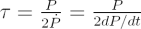
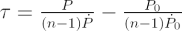
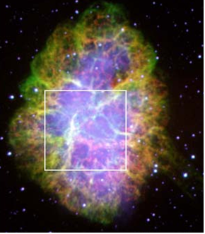

When astronomers measure the period, or spin-rate of the rotation of a pulsar, they find that pulsars are slowing down, usually at a very consistent rate. This “spin-down” is thought to be due to braking caused by the rotating pulsar’s magnetic field, and this information can be used to determine an approximate age for the pulsar, known as the characteristic age.
A radio pulsar’s characteristic age τ is usually defined as:

where P is the pulsar’s period, and the dot represents the period derivative (the rate the pulsar is slowing). The characteristic age provides an approximate measure of a pulsar’s true age, and the calculation is reasonably valid under three assumptions:
- The pulsar’s initial spin period was very much smaller than that observed today.
- There is no magnetic field decay.
- The magnetic braking can be approximated by the energy loss a spinning dipolar magnet would experience in a perfect vacuum (in this case, the braking index, n = 3.)
The “correct” formula explicitly includes n and allows for a finite initial spin period P0 and derivative.

It is important to use the same units for period and age and to check the period derivative is dimensionless.

Example
In 2007 the Crab pulsar had a period of 0.0331 sec and a period derivative of 4.22×10-13s/s. The characteristic age is around 1240 years. The supernova that produced the pulsar was in 1054 AD, yielding an age of ~950 years.